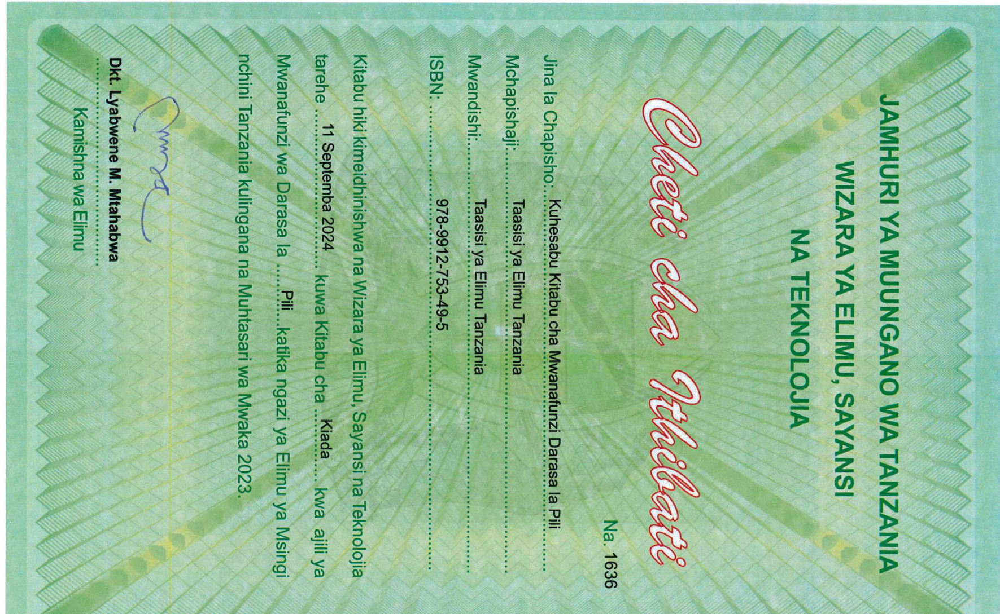

Kuhesabu
Kitabu cha Mwanafunzi
Darasa la Pili

Taasisi ya Elimu Tanzania
JAMHURI YA MUUNGANO WA TANZANIA
WIZARA YA ELIMU, SAYANSI NA TEKNOLOJIA
Cheti cha Ithibati
Na. 1636
Jina la Chapisho: Kuhesabu Kitabu cha Mwanafunzi Darasa la Pili
Mchapishaji: Taasisi ya Elimu Tanzania
Mwandishi: Taasisi ya Elimu Tanzania
ISBN: 978-9912-753-49-5
Kitabu hiki kimeidhinishwa na Wizara ya Elimu, Sayansi na Teknolojia tarehe 11 Septemba 2024 kuwa Kitabu cha .
Kiada kwa ajili ya Mwanafunzi wa Darasa la Pili katika ngazi ya Elimu ya Msingi nchini Tanzania kulingana na Muhtasari wa Mwaka 2023.
Dkt. Lyabwene M. Mtahabwa
Kamishna wa Elimu